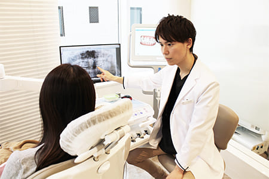
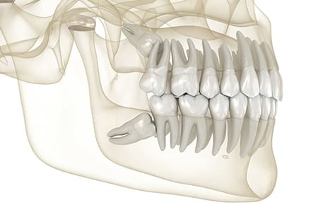
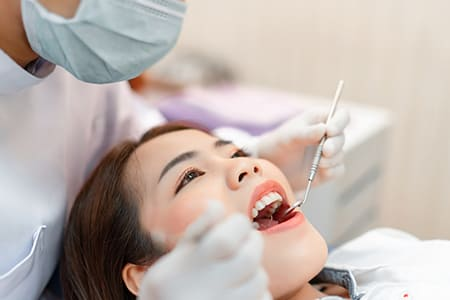
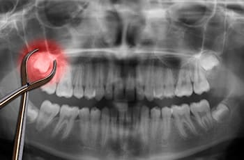

- 新宿の歯医者・矯正歯科「新宿ルーブル歯科・矯正歯科」TOP
- 口腔外科（親知らずの抜歯）
即日抜歯も可能なので
親知らずのお悩みはご相談ください
親知らずは現代人にとっては不要な歯で、痛みや腫れ・歯並びの悪化などのリスクを引き起こす可能性があります。新宿の歯医者「新宿ルーブル歯科・矯正歯科」は、親知らずの即日抜歯に対応しています。当院は抜歯の経験と知識が豊富であり、口腔外科で断られやすい横向きに生えている親知らずなどさまざまな症例に対応できます。実際に法人医院開設から、トータル2,000本程度の親知らずの抜歯を行ってきました。
親知らずの抜歯にかかる平均時間はおよそ30分で、難しい症例でも1時間～1時間半程度で済抜歯できます。また、平日でスケジュールに空きがある場合は即日抜歯も対応可能です。ただし、神経に近い症例の場合は患者さまの健康に配慮し、設備の整った大学病院への紹介を行っています。
 抜歯時の痛み軽減のためには
抜歯時の痛み軽減のためには
お口の管理が大切です

抜歯時の負担を軽減するには、お口の中が清潔に管理されていることが大切です。親知らずの抜歯では歯ぐきを切開しなければならず、周囲の汚れなどから細菌感染して腫れや痛みが出る場合があるためです。
当院では患者さまになるべく負担をかけないよう、お口の中の汚れをしっかり落としてから親知らずの抜歯を行います。基本的にお口の管理がされていない状態での抜歯はお勧めしませんが、どうしてもという要望がある場合に限り、リスクをお伝えした上で対応しています。
抜歯すべきケースと
抜歯しなくてもいいケースの違い

親知らずは、必ず抜歯する必要があるとは限りません。垂直に正しく生えていて腫れや痛み、噛み合わせのズレや虫歯・歯周病の症状がない、または将来的にそのリスクがないと判断できる場合は抜歯の必要はありません。
ただし、虫歯・歯周病が進行している、腫れや痛みがある、斜め・横向きに生えている、歯並びに明らかな悪影響がある場合は速やかな抜歯をお勧めします。ご自身で判断が難しい場合は、即日抜歯も可能な当院にご相談ください。
親知らず抜歯の痛みや
腫れ軽減のための取り組み
治癒を早めて痛みを軽減

親知らずの抜歯は、「切開したり術後に痛みや腫れが出たりして大変そう」というイメージを持たれる患者さまも多くいらっしゃいます。当院の親知らず抜歯では術前に抗生剤を投与、さらに血糖値を上げて感染しにくい状態にすることで術後の腫れや痛みを抑えます。また、テルプラグというコラーゲンスポンジを抜歯部位に入れ、痛みの軽減と治癒促進させます。
CT撮影で状態を正確に把握し
手術時間を短縮

親知らずの抜歯は手術時間が短いほど術後の腫れ・痛みが少ないため、スムーズに進めることが大切です。当院では事前にCT撮影をして親知らずや歯の根の位置・角度・形を3Dで正確に把握します。事前に分かった親知らずの状態を基に歯の切断方法や抜歯時の手順などを計画し、手術時間を短縮できるようにしています。
術後の経過を良くする抜歯後の注意点を
丁寧にご説明
親知らずの抜歯後は腫れや痛みを抑え、術後の経過を良くするためには止血をしっかりすることが大切です。そのため、圧迫止血の効果的な方法を患者さまにお伝えしています。たとえば、歯ぐきと歯ぐきでガーゼを噛むなどです。また、うがいを強くしない、ブラッシング方法、口腔ケア、食事の指導などアフターフォローも細かく行います。
親知らず抜歯後に
ご注意いただきたいこと
- 翌日まで唾液に血が混じることがあります。多量の出血の場合はご連絡ください。
- 抜歯当日は長時間の入浴や飲酒、激しい運動はお控えください。
- 腫れや痛みを誘発しますので抜歯部分は触らないようにしてください。
- 抜歯直後の飲食・喫煙は控え、硬い・熱い・刺激の強い食べ物はなるべく避けましょう。
- 処方された抗生剤は必ず飲みきり、鎮痛剤は必要に応じて服用ください。
- 抜歯当日は過度のうがいはお控えください。ブラッシングは抜歯翌日からがベストです。
- 腫れてしまった場合は濡れタオルなどで軽く冷やしてください。
親知らず抜歯後に
起こりやすいリスク
- 抜歯翌日から3日目までをピークに腫れて徐々に腫れが引きます
- 痛みで口が開きにくくなりますが1～2週間で解消されます。
- 抜歯の影響で隣の歯の根が露出して痛みが出る場合があります。
- 内出血によりあごや首、鎖骨あたりにアザが出る場合があり、1～2週間で解消されます。
- 親知らずが神経に触れている場合、抜歯後にしびれが残る場合があります。
- ドライソケット状態になると痛みが出ます。通常、抜歯場所の消毒・消炎で改善します。